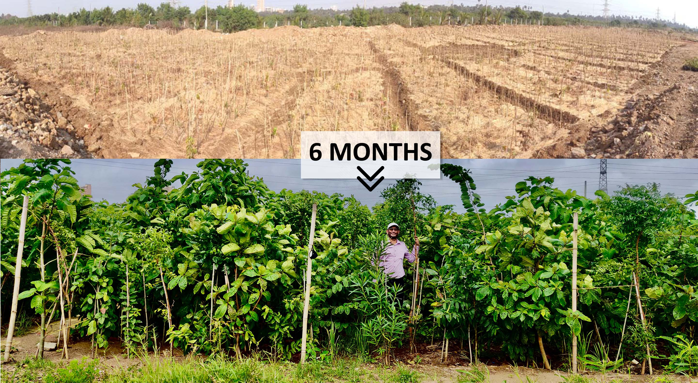

Miyaki Forest
Urban Dense Forests In Less Time And Space

We can grow ultra-fast growing dense, native forests in small patches in
different places of the city, such as residential housing societies,
gardens, industrial areas, corporate and IT parks and MIDC areas. Forests
grown under the Miyawaki method grow 10 times faster, 30 times denser and
100 times more biodiverse compared to a monoculture plantation.